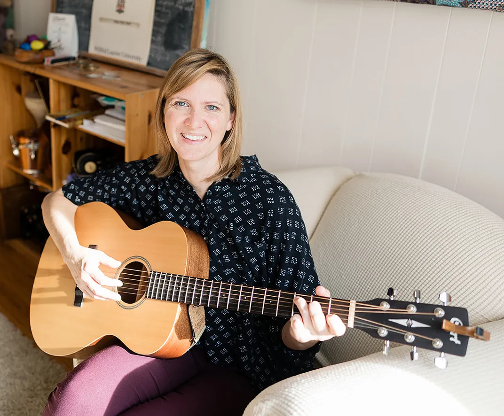

Compassionate, individualized therapy for children.
Every child experiences the world differently. Some communicate through words, others through play, movement, creativity, or music.
Some are overwhelmed by anxiety, navigating big emotions, or adjusting to life's changes. Others may be neurodivergent and need support that honours the way they naturally think, feel, and interact with the world.
Therapy isn't about changing who your child is. It's about helping them feel understood, develop confidence, strengthen emotional well-being, and discover new ways to navigate life's challenges.
My approach is flexible because every child is unique. Together, we'll find what works best for your child.

What brings your child here today?
Autism & Neurodiversity
Strengths-based, affirming psychotherapy for autistic children and children with unique ways of experiencing the world.
ADHD
Supporting attention, emotional regulation, executive functioning, self-esteem, and confidence.
Anxiety
Helping children better understand worry, manage overwhelming emotions, and feel more confident in everyday life.
Emotional Regulation
Supporting children who experience intense emotions, frustration, meltdowns, or difficulty managing big feelings.
Depression & Low Mood
Helping children reconnect with joy, relationships, and hope.
Trauma
Creating safety while helping children process difficult experiences in ways that feel manageable and supportive.
Grief & Loss
Supporting children through the loss of loved ones, family changes, illness, or other significant life transitions.
Parenting Support
Because helping a child often means supporting the people who care for them.
Learn moreWhat does therapy look like?
Parents often wonder what happens during a therapy session. The answer is that every child is different.
Some children enjoy talking. Others communicate more comfortably through play, movement, music, art, or other creative experiences. Many sessions include a combination of approaches.
As a Registered Psychotherapist with specialized training in Music Psychotherapy and Expressive Arts Therapy, I tailor each session to your child's unique strengths, interests, and needs.
Your child does not need to be musical or artistic to benefit. These are simply additional ways of helping children express themselves when words are difficult or don't come easily.
Therapy is always guided by your child's comfort, goals, and developmental stage.
I support children who…
- have recently been diagnosed with autism or ADHD
- experience anxiety or frequent worries
- have difficulty managing big emotions
- struggle with friendships or social connection
- have experienced trauma or difficult life events
- are grieving the loss of someone important
- experience school-related stress
- communicate differently
- have complex support needs
- haven't connected with traditional talk therapy
Ontario Autism Program (OAP)
Psychotherapy services may be eligible for reimbursement through the Ontario Autism Program (OAP) core clinical services.
If you have questions about funding or whether my services are a good fit for your family, I'd be happy to discuss this during a complimentary consultation.
Learn more about fees and fundingEvery child communicates differently.
Children don't all express themselves the same way.
- Some talk easily.
- Some need time before they trust.
- Some process emotions through movement.
- Some through drawing.
- Some through music.
- Some simply need an adult who understands their unique way of experiencing the world.
There is no one "right" way to participate in therapy. Sessions are designed around your child's strengths—not expectations.
Let's find the right approach together.
Choosing a therapist for your child is an important decision. If you're wondering whether my approach is the right fit, I invite you to schedule a complimentary consultation. Together, we can discuss your concerns, answer your questions, and determine the best next steps.
Book a Consultation